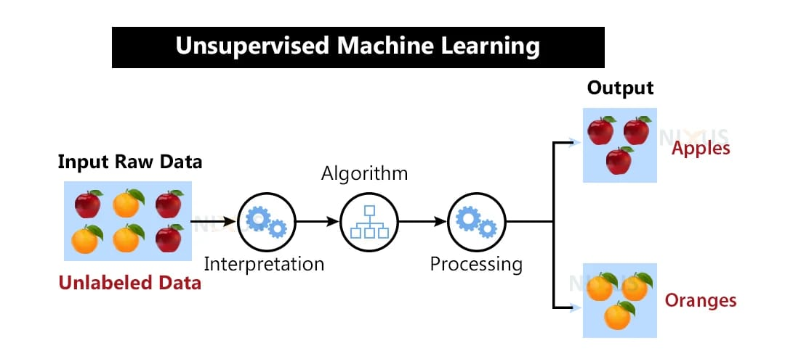
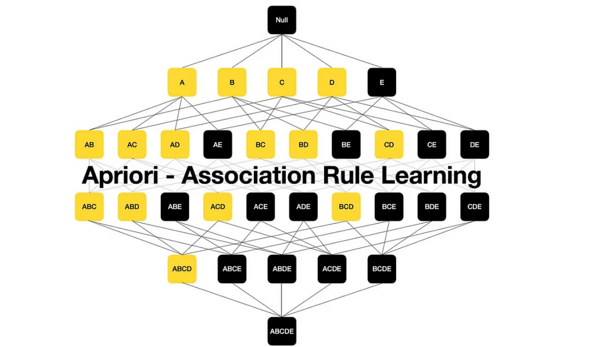

Unsupervised Learning:
1.Clustering Introduction:
- Unsupervised learning involves discovering patterns and structures in data without explicit supervision. Clustering is a common unsupervised learning technique used to group similar data points together.
- Click here for YOUTUBE Class
2.Similarity and Distance Measures:
- Similarity measures quantify the degree to which two data objects are alike. Common distance measures include Euclidean distance, Manhattan distance, and cosine similarity.
- Click here for YOUTUBE Class
3.Agglomerative Algorithms:
- Agglomerative clustering algorithms start with each data point as its own cluster and iteratively merge clusters based on some similarity measure until a stopping criterion is met. Examples include hierarchical clustering.
- Click here for YOUTUBE Class
4.Divisive Clustering:
- Divisive clustering is the opposite of agglomerative clustering. It starts with all data points in one cluster and then splits them into smaller clusters based on some criterion.
- Click here for YOUTUBE Class
5.Minimum Spanning Tree:
- Minimum spanning tree (MST) is a graph theory concept that finds the shortest path to connect all data points in a dataset without forming any cycles. It can be used as a preprocessing step in clustering algorithms.
- Click here for YOUTUBE Class

Association Rules:
1.Introduction:
- Association rule mining is a technique used to discover interesting relationships, dependencies, or associations among data items in large datasets.
- Click here for YOUTUBE Class
2.Large Itemsets:
- In association rule mining, large itemsets refer to sets of items that appear frequently together in transactions above a specified minimum support threshold.
- Click here for YOUTUBE Class
3.Apriori Algorithm:
- The Apriori algorithm is a classic algorithm used for mining frequent itemsets and generating association rules. It works by iteratively finding frequent itemsets and then using them to generate candidate itemsets until no new frequent itemsets can be found.
- Click here for YOUTUBE Class
